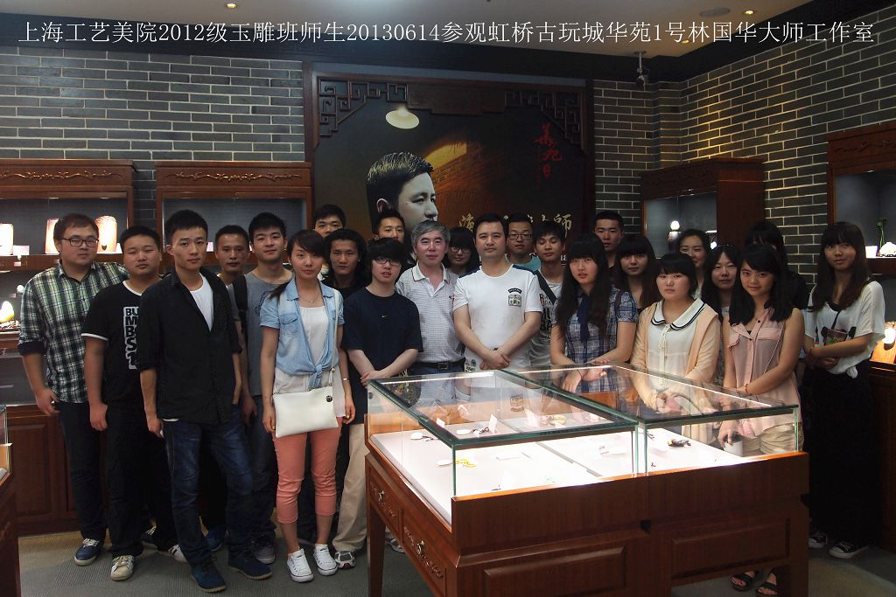
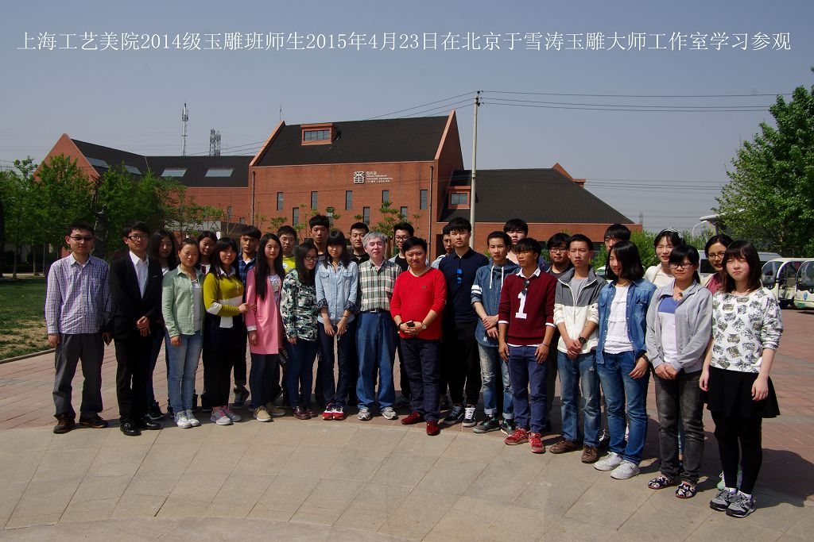
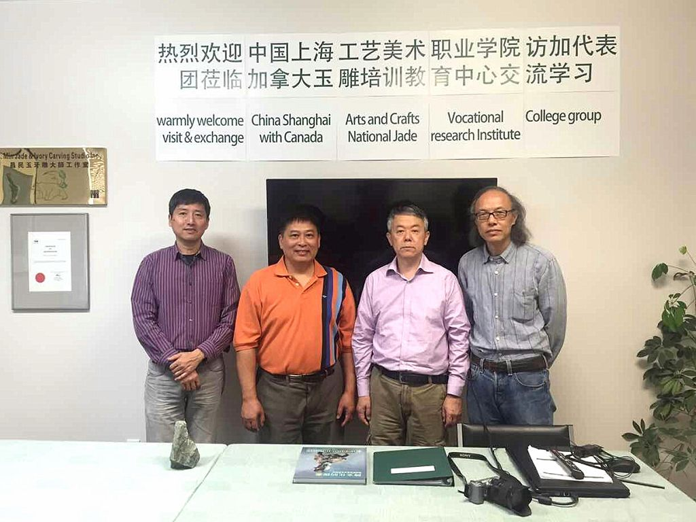
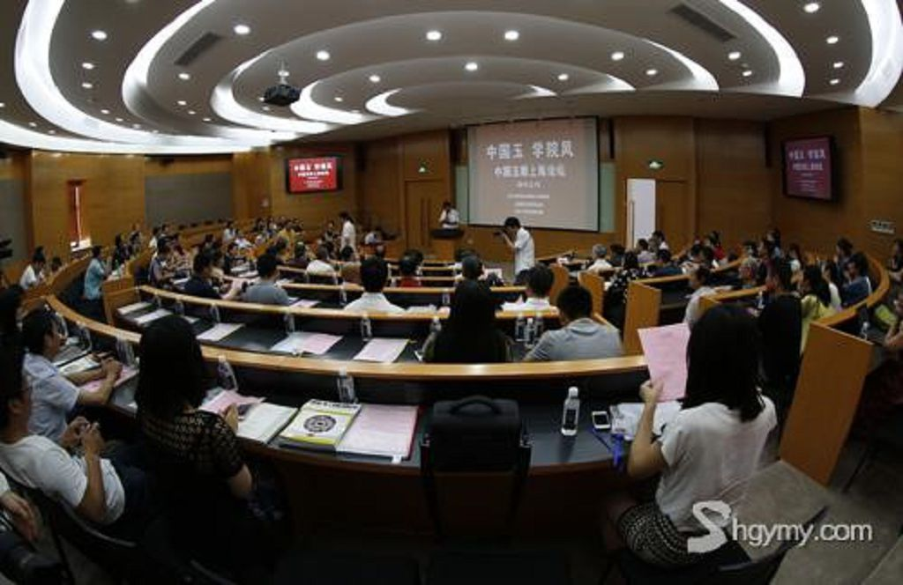
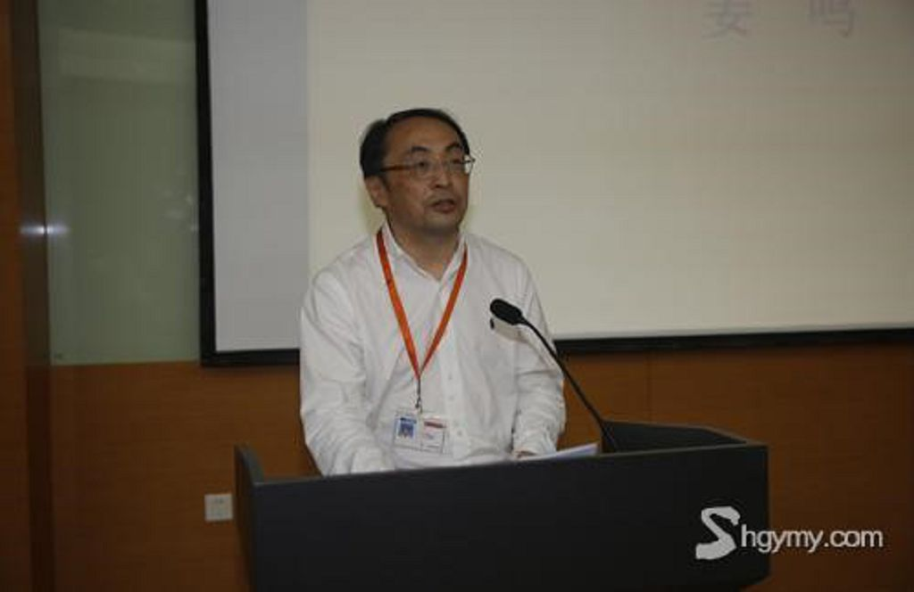
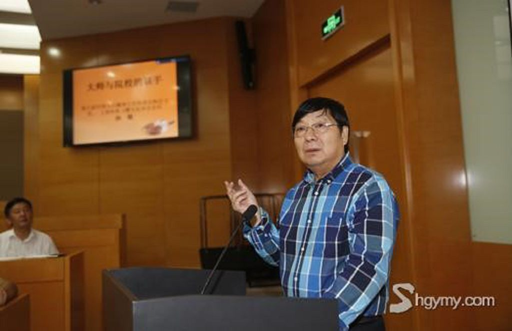

   我院承办2015中国玉雕上海论坛
久负盛名的中国玉石雕神工奖，今年9月再度盛大揭幕。9月10日下午，题为“中国玉 学院风”的2015中国玉雕上海论坛在我院D203报告厅隆重举行。来自全国各地的玉雕大师和玉雕艺术评论家围绕年度主题，纵论玉雕人才的院校培养和玉雕创作的学院风格。第八届中国玉石雕神工奖组委会执行主任、上海海派玉雕文化协会会长孙敏，上海工艺美术职业学院院长姜鸣分别致辞。来自全国各地的“中国工艺美术大师”、“中国玉石雕刻大师”、玉雕艺术评论家、相关协会、学会领导、校友代表与在校师生约100余人参加了论坛。论坛由上海工艺美术职业学院副院长杨勃、上海海派玉雕文化协会副秘书长、海派玉雕文化研究会主任周祥康共同主持。  姜鸣院长在致辞中说：我们学院的玉雕专业，是一段正在延续的历史。当院校教育遇上玉雕艺术，生出了很多色彩，很多个性——传习，研究，保护，现代转换，创新发展，等等。在“院校教育”与“现实关怀”两者之间如何厘清自己的定位和使命，很难，但是必须去做。一个成熟的院校，一定有长远规划和明确定位，拓宽视野，面向社会，能够建立自己的独特性和专业高度，并围绕高度释放影响力。真诚地希望今天的论坛，留下各位的真知灼见，给我们宝贵的建言。从这个意义上，学院风提供的是一种建设性，正能量。 姜鸣院长致辞 孙敏会长说，上海工艺美院具有55年办学积淀，是百所国家级示范性高等职业院校中唯一一所艺术设计类院校，作为海派玉雕发展和玉雕专业人才培养的重镇，培育了众多大师级人物和新生代业界精英，自1960年建校以来先后走出了萧海春、刘忠荣、黄罕勇等一大批海派玉雕的风流人物，形成了传承和发展方向上的“学院风”及其文化主张。这次论坛，希望为今后学院与工艺美术大师之间的良好互动打下坚实基础。 孙敏会长发言 会上，中国工艺美术大师、原湖北省工艺美术研究所副所长、中国地质大学珠宝学院研究生导师、武汉理工学院玉雕（本科）专业带头人袁嘉骐、上海市工艺美术大师、教授、非遗传承人、工艺美院玉雕专业带头人赵丕成、国家博物馆艺术品鉴定中心主任、玉雕艺术评论家岳峰、中国美术学会雕塑专业委员会会员，中国玉石雕刻大师、中国珠宝首饰行业协会理事、“石上艺术”创始人刘东、中国工艺美术大师、中国玉石雕刻大师、非遗传承人、“青藤玉舍”崔磊、中国玉器年鉴主编、中央美院玉文化研究中心主任于明等十余位专家、学者、大师围绕主题作主旨发言。 据悉，“神工奖”创办于2007年，堪为国内玉坛盛事。本次盛会由中国民间文艺家协会、上海市文化广播影视管理局、上海市文学艺术界联合会指导，由上海海派玉雕文化协会、中福古玩城主办，上海神玉文化发展有限公司承办，中国工艺美术学会玉、石雕刻艺术专业委员会、上海工艺美术职业学院等12家单位联合协办。 |
| 珠宝设计网站 中国珠宝设计网 国际珠宝网 傲宝网 BACCARAT |
雕塑设计网站 中国雕塑网 |
玉器图库 一些挂件 一些手把件 一些摆件 |
玉器设计与雕刻大赛 上海玉器雕刻神功奖 上海玉器雕刻玉龙奖 北京玉器雕刻天工奖 |
玉器设计与工艺发展动态 玉器设计与工艺过去 玉器设计与工艺现在 玉器设计与工艺未来 |